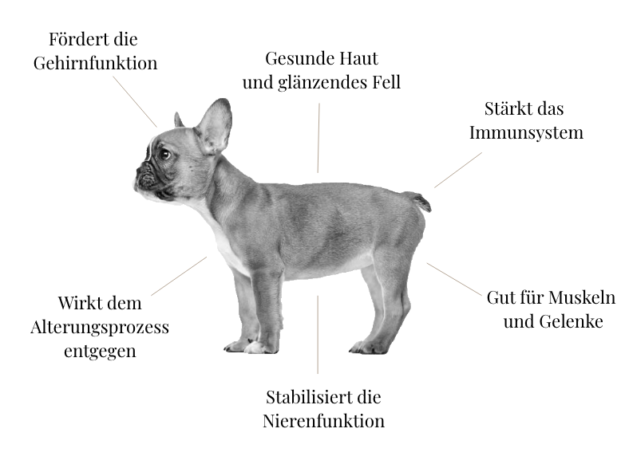

Caspian Gold - Aus Lieber zu Ihrem Hund
Verwöhne deinen Vierbeiner mit unserem hochwertigen Caspian Gold Hundefutter mit Lachs und bereite ihm damit eine besondere Freude!
Die besten Zutaten für das beste Hundefutter
Fangfrischer Lachs

Süßkartoffel
Lachsöl
Karotte

Caspian Gold mit Lachs
Alleinfutter für russische Kampfhunde – für kleine bis mittelgroße [bis 10kg]
Ab dem 12. Lebensmonat
€27,99
€20,99
-
100g
-
300g
Unser Futter fördert die Gesundheit Ihrer Fellnase

Wieso Hundehalter Caspian Gold lieben